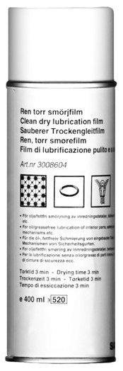

Clean Dry Lubricating Film, Gleitmo 300
Clean Dry Lubricating Film, Gleitmo 300

Specifications
Gleitmo 300. Silicone wax. Colourless. Free of oil and grease. 400 ml spray can.
Range of application
Invisible lubricating film for lubricating seat belts, rubber, plastic and interior parts.
Transport
The product is classified as dangerous goods when transporting. Special regulations apply to packaging, marking and transport, therefore existing lead times cannot be guaranteed.
Directives
The product is extremely flammable. May be hazardous if inhaled after frequent and repeated exposure. May be hazardous to skin in case of prolonged exposure. Pressurized can. Must not be exposed to direct sunlight or temperatures above +50 °C. Must not be punctured or burned. Also applies to empty can. Do not spray toward open flame or glowing materials. Must be stored separately from materials which may ignite the product - Smoking is prohibited. Avoid inhaling spray mist. Avoid skin and eye contact. Make sure that ventilation is adequate.